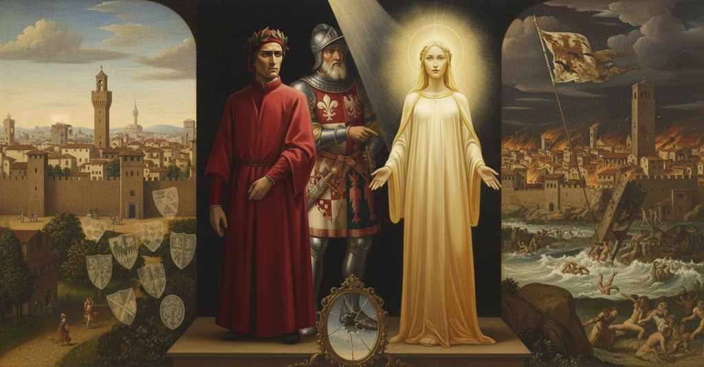

Paradiso — Canto 16

Su richiesta di Dante, Cacciaguida descrive la piccola e virtuosa Firenze dei suoi tempi, elencando le antiche famiglie nobili e individuando l'origine della sua rovina nella mescolanza con genti nuove e nella faida innescata dai Buondelmonti. At Dante's request, Cacciaguida describes the small and virtuous Florence of his time, listing the ancient noble families and identifying the origin of its ruin in the mixing with new people and the feud sparked by the Buondelmonti. ダンテの問いに応え、カッチャグイーダは自らの時代の小さく徳高かったフィレンツェを描写し、古い貴族を列挙し、その破滅の原因が新来の人々との混血とブオンデルモンティ家が引き起こした確執にあると指摘する。
1
O poca nostra nobiltà di sangue,
O our poor nobility of blood,
おお、我らが血筋の卑小さよ、
2
se glorïar di te la gente fai
if you make people glory in you
もしおまえが地上の人々を誇らせるとしても、
3
qua giù dove l’affetto nostro langue,
down here where our affection languishes,
我らが想いの弱まるこの地では、
4
mirabil cosa non mi sarà mai:
it will never be a wondrous thing to me:
私には決して驚くべきことではない。
5
ché là dove appetito non si torce,
for there where appetite is not warped,
なぜなら、欲望の歪むことのない場所、
6
dico nel cielo, io me ne gloriai.
I mean in Heaven, I gloried in it.
すなわち天国で、私はおまえを誇ったのだから。
7
Ben se’ tu manto che tosto raccorce:
Truly you are a cloak that quickly shortens:
まことにおまえはすぐに縮んでしまう外套。
8
sì che, se non s’appon di dì in die,
so that, if one does not add to it day by day,
日々、徳を継ぎ足さねば、
9
lo tempo va dintorno con le force.
time goes around with its shears.
時は鋏を手に巡り歩く。
10
Dal ‘voi’ che prima a Roma s’offerie,
With the 'you' that was first offered in Rome,
かつてローマで初めて用いられた「ヴォイ」という敬称で、
11
in che la sua famiglia men persevra,
in which its family perseveres less,
その民は今やあまりそれに固執しないが、
12
ricominciaron le parole mie;
my words began again;
私は再び言葉を始めた。
13
onde Beatrice, ch’era un poco scevra,
at which Beatrice, who was a little apart,
すると、少し離れていたベアトリーチェは、
14
ridendo, parve quella che tossio
smiling, seemed like the one who coughed
微笑みながら、咳をしたかのようだった、
15
al primo fallo scritto di Ginevra.
at the first written fault of Guinevere.
グィネヴィアの最初の過ちが記された時に。
16
Io cominciai: «Voi siete il padre mio;
I began: «You are my father;
私は始めた。「あなた様は私の父です。
17
voi mi date a parlar tutta baldezza;
you give me all boldness to speak;
あなた様は私に語る全ての勇気を与えてくださる。
18
voi mi levate sì, ch’i’ son più ch’io.
you raise me so, that I am more than I.
あなた様は私を高め、私は私以上になるのです。
19
Per tanti rivi s’empie d’allegrezza
Through so many streams is filled with happiness
多くの流れから私の心は喜びに満たされ、
20
la mente mia, che di sé fa letizia
my mind, which makes a joy of itself
自らが歓喜する、
21
perché può sostener che non si spezza.
because it can endure it and not shatter.
それに耐えて壊れないがゆえに。
22
Ditemi dunque, cara mia primizia,
Tell me then, my dear first-fruit,
では、お教えください、我が親愛なる初穂よ、
23
quai fuor li vostri antichi e quai fuor li anni
who were your ancestors and what were the years
あなた様の祖先はどなたで、年はいつでしたか、
24
che si segnaro in vostra püerizia;
that were marked in your boyhood;
あなた様の幼年時代に記された年は。
25
ditemi de l’ovil di San Giovanni
tell me of the sheepfold of Saint John
お教えください、聖ジョヴァンニの羊小屋について、
26
quanto era allora, e chi eran le genti
how large it was then, and who were the people
当時どれほどの大きさで、どのような人々が
27
tra esso degne di più alti scanni».
within it worthy of the highest seats».
その中で最も高い座にふさわしかったかを」。
28
Come s’avviva a lo spirar d’i venti
As a coal glows into flame at the blowing of
風が吹くにつれて燃えさしが炎となって
29
carbone in fiamma, così vid’ io quella
the winds, so I saw that light
息づくように、私の心尽くしの言葉にその光が
30
luce risplendere a’ miei blandimenti;
grow brighter at my blandishments;
輝きを増すのを私は見た。
31
e come a li occhi miei si fé più bella,
and as to my eyes it made itself more beautiful,
そして、私の目にますます美しく映るにつれて、
32
così con voce più dolce e soave,
so with a voice more sweet and gentle,
さらに優しく穏やかな声で、
33
ma non con questa moderna favella,
but not with this modern speech,
しかしこの現代の言葉遣いではなく、
34
dissemi: «Da quel dì che fu detto ‘Ave’
it said to me: “From that day when 'Ave' was said
私に語った。「『アヴェ』と告げられたその日から、
35
al parto in che mia madre, ch’è or santa,
to the birth in which my mother, who is now a saint,
今や聖女である我が母が、私を身ごもり
36
s’allevïò di me ond’ era grave,
was relieved of me with whom she was heavy,
重かった体から楽になった出産の日まで、
37
al suo Leon cinquecento cinquanta
to its Lion five hundred fifty
その獅子座に、五百と五十と
38
e trenta fiate venne questo foco
and thirty times came this fire
三十回、この火が来たのだ、
39
a rinfiammarsi sotto la sua pianta.
to be rekindled beneath its paw.
その足元で再び燃え上がるために。
40
Li antichi miei e io nacqui nel loco
My ancestors and I were born in the place
我が古き先祖たちと私は、その場所で生まれた、
41
dove si truova pria l’ultimo sesto
where the last ward is first found
あなた方の年一回の競技を走る者たちから見て、
42
da quei che corre il vostro annüal gioco.
by him who runs in your annual game.
最後の六分の一区画が最初に見つかる場所に。
43
Basti d’i miei maggiori udirne questo:
Let it suffice to hear this of my ancestors:
我が先祖についてはこれだけ聞けば十分だろう。
44
chi ei si fosser e onde venner quivi,
who they were and whence they came here,
彼らが誰で、どこからここへ来たのかは、
45
più è tacer che ragionare onesto.
it is more honest to be silent than to speak.
正直であるよりはむしろ語らぬ方がよい。
46
Tutti color ch’a quel tempo eran ivi
All those who at that time were there
当時そこで、マルスと洗礼者との間で
47
da poter arme tra Marte e ’l Batista,
able to bear arms between Mars and the Baptist,
武具を扱えた者すべてを合わせても、
48
eran il quinto di quei ch’or son vivi.
were a fifth of those who are now alive.
今生きている者たちの五分の一であった。
49
Ma la cittadinanza, ch’è or mista
But the citizenry, which is now mixed
だが、今ではカンピ、チェルタルド、フェッギーネの者で
50
di Campi, di Certaldo e di Fegghine,
with folk from Campi, from Certaldo, and from Fighine,
混じり合った市民たちは、
51
pura vediesi ne l’ultimo artista.
was seen pure in the lowliest artisan.
最も身分の低い職人に至るまで純粋な姿で見られたのだ。
52
Oh quanto fora meglio esser vicine
Oh how much better it would be for those people
おお、私が言うかの民が近隣にいる方が、
53
quelle genti ch’io dico, e al Galluzzo
I speak of to be neighbors, and for you to have your border at Galluzzo
そしてガッルッツォとトレスピアーノに
54
e a Trespiano aver vostro confine,
and at Trespiano,
あなた方の国境がある方が、どれほど良かったことか。
55
che averle dentro e sostener lo puzzo
than to have them inside and endure the stench
彼らを内に抱え、アグーリョーネの田舎者の、
56
del villan d’Aguglion, di quel da Signa,
of the peasant from Aguglione, and of him from Signa,
あのシーニャの者の悪臭に耐えるよりは！
57
che già per barattare ha l’occhio aguzzo!
who already for graft has his eye sharp!
彼はすでに汚職のために目を光らせている！
58
Se la gente ch’al mondo più traligna
If the people that in the world most degenerates
もし世で最も堕落した民が、
59
non fosse stata a Cesare noverca,
had not been a stepmother to Caesar,
カエサルに対して継母でなく、
60
ma come madre a suo figlio benigna,
but benign like a mother to her son,
我が子に対する母のように慈悲深かったなら、
61
tal fatto è fiorentino e cambia e merca,
one who is made a Florentine and trades and traffics
フィレンツェ人となり、両替や商いをするある者は、
62
che si sarebbe vòlto a Simifonti,
would have turned back to Simifonti,
シミフォンティに帰ったことであろう、
63
là dove andava l’avolo a la cerca;
where his grandfather went begging;
その祖父が物乞いに行っていた場所へ。
64
sariesi Montemurlo ancor de’ Conti;
Montemurlo would still belong to the Conti;
モンテムルロは今なおコンティ家のものであったろう。
65
sarieno i Cerchi nel piovier d’Acone,
the Cerchi would be in the parish of Acone,
チェルキ家はアコーネの教区に、
66
e forse in Valdigrieve i Buondelmonti.
and perhaps the Buondelmonti in Valdigrieve.
そして恐らくヴァルディグレーヴェにブオンデルモンティ家がいただろう。
67
Sempre la confusion de le persone
Always the confusion of persons
常に人々の混淆は、
68
principio fu del mal de la cittade,
was the beginning of the city's ill,
都市の悪の始まりであった、
69
come del vostro il cibo che s’appone;
as in your body is the food that is added on;
あなた方の体にとって、消化しきれない食べ物がそうであるように。
70
e cieco toro più avaccio cade
and a blind bull falls more suddenly
そして盲目の雄牛は盲目の子羊よりも早く倒れる。
71
che cieco agnello; e molte volte taglia
than a blind lamb; and many times one sword cuts
そしてしばしば、五本の剣よりも一本の剣の方が
72
più e meglio una che le cinque spade.
more and better than five.
より多く、より良く断ち切るのだ。
73
Se tu riguardi Luni e Orbisaglia
If you look at Luni and Urbisaglia,
もし君がルーニとオルビザーリアに目を向け、
74
come sono ite, e come se ne vanno
how they are gone, and how after them go
それらがどうなったか、そしてその後を追って
75
di retro ad esse Chiusi e Sinigaglia,
Chiusi and Senigallia,
キウージとシニガッリアがどうなりつつあるかを見れば、
76
udir come le schiatte si disfanno
to hear how families are undone
家系がいかに滅びるかを聞くことも、
77
non ti parrà nova cosa né forte,
will not seem a new or hard thing to you,
新しいこととも、辛いこととも思わぬだろう、
78
poscia che le cittadi termine hanno.
since cities too have their end.
都市にも終わりがあるのだから。
79
Le vostre cose tutte hanno lor morte,
All your things have their death,
あなた方のものすべてに死がある、
80
sì come voi; ma celasi in alcuna
just as you do; but it is hidden in some
あなた方自身と同じように。しかしそれは、長く続くものにおいては
81
che dura molto, e le vite son corte.
that last long, while lives are short.
隠されており、人の命は短いのだ。
82
E come ’l volger del ciel de la luna
And as the turning of the heaven of the moon
そして月天の運行が、
83
cuopre e discuopre i liti sanza posa,
covers and uncovers the shores without pause,
休みなく岸辺を覆い、また現すように、
84
così fa di Fiorenza la Fortuna:
so does Fortune with Florence:
フィレンツェに対して運命の女神もそうするのだ。
85
per che non dee parer mirabil cosa
therefore it should not seem a marvelous thing,
それゆえ、驚くべきことと思われるべきではない、
86
ciò ch’io dirò de li alti Fiorentini
what I shall say of the great Florentines
私が語るであろう、かの高貴なフィレンツェ人たちのことを、
87
onde è la fama nel tempo nascosa.
whose fame is hidden in time.
その名声は時の中に隠されているが。
88
Io vidi li Ughi e vidi i Catellini,
I saw the Ughi and I saw the Catellini,
私はウーギ家を見、カテッリーニ家を見た、
89
Filippi, Greci, Ormanni e Alberichi,
Filippi, Greci, Ormanni, and Alberichi,
フィリッピ家、グレーチ家、オルマンニ家、そしてアルベリーキ家を、
90
già nel calare, illustri cittadini;
already in decline, illustrious citizens;
すでに没落しつつあった、高名な市民たちを。
91
e vidi così grandi come antichi,
and I saw, as great as they were ancient,
そして偉大であると同時に古い家々を見た、
92
con quel de la Sannella, quel de l’Arca,
the one of the Sannella, the one of the Arca,
デッラ・サンネッラ家、デッラ・アルカ家、
93
e Soldanieri e Ardinghi e Bostichi.
and Soldanieri and Ardinghi and Bostichi.
そしてソルダニエーリ家、アルディンギ家、ボスティキ家と共に。
94
Sovra la porta ch’al presente è carca
Over the gate that at present is burdened
今は重荷となっている門の上には
95
di nova fellonia di tanto peso
by new felony of so much weight
新たな裏切りの罪がのしかかり、その重さは
96
che tosto fia iattura de la barca,
that soon it will be the shipwreck of the boat,
やがてそれは舟（国家）の難破となろうが、
97
erano i Ravignani, ond’ è disceso
were the Ravignani, from whom has descended
そこにラヴィニャーニ家がいた、そこから
98
il conte Guido e qualunque del nome
Count Guido and whoever of the name
グイド伯と、その名の者たちは皆
99
de l’alto Bellincione ha poscia preso.
of the great Bellincione has since taken.
高貴なベッリンチョーネの名を後に継いだのだ。
100
Quel de la Pressa sapeva già come
The one of the Pressa already knew how
デッラ・プレッサ家はすでに知っていた
101
regger si vuole, e avea Galigaio
one ought to rule, and Galigaio had
いかに統治すべきかを、そしてガリガイオ家は
102
dorata in casa sua già l’elsa e ’l pome.
already in his house the hilt and pommel gilded.
すでに家で柄と柄頭を金で飾っていた。
103
Grand’ era già la colonna del Vaio,
Great already was the column of Vair,
ヴァイオ（毛皮）の柱（ピリ家の紋章）はすでに偉大であった、
104
Sacchetti, Giuochi, Fifanti e Barucci
Sacchetti, Giuochi, Fifanti, and Barucci,
サッケッティ家、ジュオーキ家、フィファンティ家、バルッチ家
105
e Galli e quei ch’arrossan per lo staio.
and Galli, and those who blush for the bushel.
そしてガッリ家と、枡のことで顔を赤らめる者たちも。
106
Lo ceppo di che nacquero i Calfucci
The stock from which the Calfucci were born
カルフッチ家が生まれた家系は
107
era già grande, e già eran tratti
was already great, and already were drawn
すでに偉大で、すでに引き立てられていた
108
a le curule Sizii e Arrigucci.
to the curule chairs Sizii and Arrigucci.
高位の官職にシーツィ家とアッリグッチ家が。
109
Oh quali io vidi quei che son disfatti
Oh what men I saw who are undone
ああ、私は何と多くの者たちを見たことか、彼らは滅ぼされたのだ
110
per lor superbia! e le palle de l’oro
by their pride! and the balls of gold
自らの傲慢さゆえに！ そして金の球（ランベルティ家の紋章）は
111
fiorian Fiorenza in tutt’ i suoi gran fatti.
made Florence flower in all her great deeds.
フィレンツェを、そのあらゆる偉業において輝かせていた。
112
Così facieno i padri di coloro
So did the fathers of those
そのように、彼らの父祖たちは振る舞ったのだ
113
che, sempre che la vostra chiesa vaca,
who, whenever your church is vacant,
あなたがたの教会に空位が生じるたびに
114
si fanno grassi stando a consistoro.
make themselves fat while sitting in consistory.
枢機卿会議に座して肥え太る者たちの。
115
L’oltracotata schiatta che s’indraca
The overweening clan that turns dragon-like
あの傲慢な一族は、竜と化す
116
dietro a chi fugge, e a chi mostra ’l dente
behind one who flees, and to one who shows his teeth
逃げる者を追うとき、そして歯をむき出す者や
117
o ver la borsa, com’ agnel si placa,
or his purse, grows meek as a lamb,
あるいは財布を見せる者には、子羊のようにおとなしくなる、
118
già venìa sù, ma di picciola gente;
was already rising, but of lowly people;
その一族はすでに台頭していたが、身分の低い家柄だった。
119
sì che non piacque ad Ubertin Donato
so that it did not please Ubertin Donato
そのためウベルティン・ドナートは喜ばなかった
120
che poï il suocero il fé lor parente.
that then his father-in-law made him their kinsman.
義父が彼らを親族にしてしまったことを。
121
Già era ’l Caponsacco nel mercato
Already the Caponsacco had in the market
すでにカポンサッコ家はメルカート（市場）に
122
disceso giù da Fiesole, e già era
come down from Fiesole, and already were
フィエーゾレから下りてきており、すでに
123
buon cittadino Giuda e Infangato.
good citizens Giuda and Infangato.
ユダ家とインファンガート家は良き市民であった。
124
Io dirò cosa incredibile e vera:
I will say a thing incredible and true:
信じがたい、しかも真実のことを言おう。
125
nel picciol cerchio s’entrava per porta
in the small circle one entered by a gate
小さな城壁には門を通って入ったが、
126
che si nomava da quei de la Pera.
that was named for those of the Pera.
それはデッラ・ペーラ家の人々にちなんで名付けられていた。
127
Ciascun che de la bella insegna porta
Each one who bears the fair insignia
その美しい紋章を掲げる者は皆、
128
del gran barone il cui nome e ’l cui pregio
of the great baron whose name and whose worth
偉大な男爵のもので、その名とその功績を
129
la festa di Tommaso riconforta,
the feast of Thomas re-comforts,
聖トマスの祝祭が慰める、
130
da esso ebbe milizia e privilegio;
from him had knighthood and privilege;
彼から騎士の位と特権を授かった。
131
avvegna che con popol si rauni
although with the people now joins
今日、それを縁飾りで囲む者は
132
oggi colui che la fascia col fregio.
he who girds it with a border.
民衆と手を組んでいるけれども。
133
Già eran Gualterotti e Importuni;
Already there were Gualterotti and Importuni;
すでにグアルテロッティ家とインポルトゥーニ家がいた。
134
e ancor saria Borgo più quïeto,
and Borgo would still be more quiet,
そしてボルゴ地区はもっと静かであっただろう、
135
se di novi vicin fosser digiuni.
if of new neighbors it had been fasting.
もし新しい隣人たちがいなかったならば。
136
La casa di che nacque il vostro fleto,
The house from which your weeping was born,
お前たちの嘆きが生まれたその家は、
137
per lo giusto disdegno che v’ha morti
through the just disdain that has killed you
お前たちを死に至らしめた正当な憤りによって
138
e puose fine al vostro viver lieto,
and put an end to your happy life,
お前たちの喜ばしい暮らしに終わりを告げたが、
139
era onorata, essa e suoi consorti:
was honored, it and its kinsmen:
その家もその縁者たちも、誉れ高かった。
140
o Buondelmonte, quanto mal fuggisti
o Buondelmonte, how badly you fled
おおブオンデルモンテよ、何と不幸にもお前は逃れたことか
141
le nozze süe per li altrui conforti!
its nuptials at the urgings of others!
他人の勧めによって、かの家との婚儀を！
142
Molti sarebber lieti, che son tristi,
Many would be happy, who now are sad,
今は悲しんでいる多くの者が、喜んでいたであろう、
143
se Dio t’avesse conceduto ad Ema
if God had committed you to the Ema
もし神がお前をエマ川に与えていたならば
144
la prima volta ch’a città venisti.
the first time that you came to the city.
お前が初めて都にやって来た時に。
145
Ma conveniesi a quella pietra scema
But it was fitting for that mutilated stone
だが、あの欠けた石にはふさわしかったのだ
146
che guarda ’l ponte, che Fiorenza fesse
that guards the bridge, that Florence should make
橋を見守るあの石に、フィレンツェが生贄を捧げることは
147
vittima ne la sua pace postrema.
a victim in her final peace.
その最後の平和の時に。
148
Con queste genti, e con altre con esse,
With these peoples, and with others with them,
これらの人々、そして彼らと共にいた他の人々と、
149
vid’ io Fiorenza in sì fatto riposo,
I saw Florence in such repose,
私はフィレンツェがかくのごとき安らぎにあるのを見た、
150
che non avea cagione onde piangesse.
that she had no reason for which to weep.
嘆き悲しむべきいかなる理由も持たなかった。
151
Con queste genti vid’io glorïoso
With these peoples I saw her populace glorious
これらの人々と共に私は見た、栄光に輝き
152
e giusto il popol suo, tanto che ’l giglio
and just, so much that the lily
そして正義に満ちたその民を、あまりにそうであったので、百合の紋章が
153
non era ad asta mai posto a ritroso,
was never placed reversed upon a staff,
決して槍の先に逆さに掲げられることはなく、
154
né per divisïon fatto vermiglio».
nor through division made vermilion.»
また分裂によって赤く染められることもなかったのだ」。